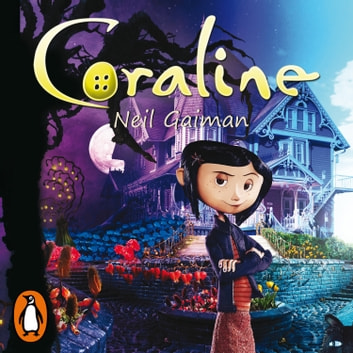

Coraline - E o Mundo Secreto
Sinopse:
Em sua nova casa, Coraline sente-se entediada, até que encontra uma porta secreta que a leva a uma versão alternativa — e melhor — de sua vida. Mas esse mundo aparentemente perfeito acabará se tornando perigoso demais, e Coraline precisará ter coragem e esperteza para escapar e salvar sua família no mundo real.